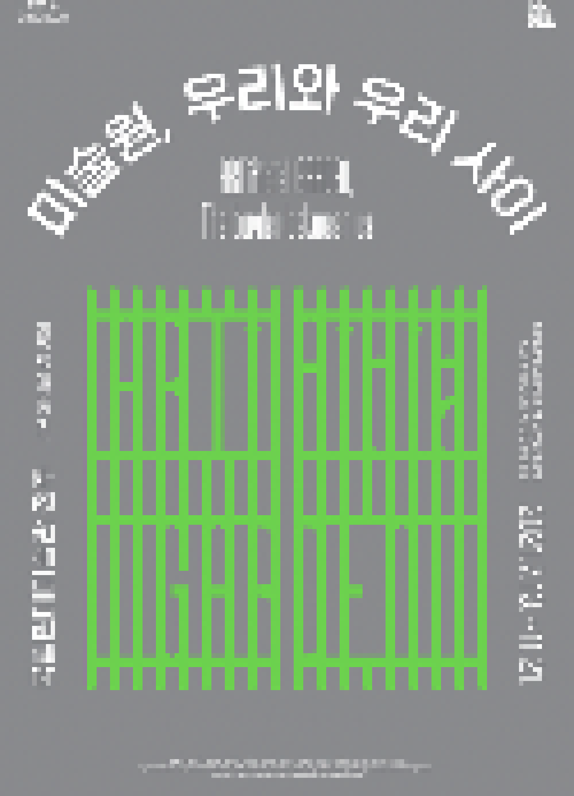

> title
미술원, 우리와 우리 사이
> content
전세계를 들썩이게 만든 감염병의 세계적 대유행은 뜻하지 않게 우리 사회를 자발적 감금의 사회로 만들었다. 국가적으로 시행된 사회적 '거리두기' 방침에 따라 사람과 사람 사이에는 물리적 거리와 보이지 않는 경계가 생겼다.
또한 인간과 동물 간 근접한 거리가 팬데믹의 원인 중 하나로 지목됨에 따라 우리와 '그들' 사이의 거리와 관계의 문제점들이 주목받기 시작했다. 인간과 자연의 공존 불가능에 대한 항간의
이야기들은 마치 인간이 있는 한 지구는 존재하지 못할 것 같은 비극적 관계를 상정한다.
이번 전시는 관계의 경계의 의미가 다층적으로 내재된 현재의 위기에서 인간 중심의 사고방식과 동식물을 생각하는 관점에 대해 이야기한다. 인간과 자연, 특히 동물과 식물을
‘우리’라는 관계 안에서 바라보며, 우리 사이의 보이는/보이지 않는 경계를 시각화한다. '우리'를 중의적 의미로 해석하여 우리(we)로 규정된 주체를 인간과 동물, 식물로 확장하고, 또한
상시적으로 감금 상태에서 살아가는 동물원 동물들과 식물원 식물들처럼 우리(cage) 라는 물리적 경계 안에서 감금과 보호 사이의 의미를 묻는다. 이러한 질문들을 통해 우리가 우리 안에서
같이 살아가기 위해 무엇이 필요한지 고민하고 미술은 어떤 방식으로 이러한 고민을 시각화하는지 살펴본다. 동물 없는 동물원 식물 없는 식물원으로서 이번 전시는 우리와 우리 사이의 적절한
거리와 관계 맺기에 대해 생각하는 기회가 될 것이다.
#1 우리와 우리 사이
일반적으로 '우리'는 나를 포함한 타인 혹은 집단을 다소 친근하게 이를 때 사용한다. 동시에 동음이의어로서 또 다른 '우리'는 동물, 가축을 가두어 키우는 곳을 가리킨다. 이처럼
'우리'라는 표현에는 정서적 동질감과 동시에 물리적 테두리로서 경계, 집단과 집단의 배타성이 담겨 있다. 우리가 '우리'라는 틀 안에 갇혀 있는 대신 동물과 식물의 입장에서 '우리'의
의미와 관계를 생각하는 것은 공존을 위한 시작이 될 것이다. 그리고 모두를 포함하는 다양한 '우리'의 개념 안에서 함께 살기 위한 적절한 거리와 관계의 의미를 생각해 볼 수 있을 것이다.
#2 어색한 공존
인간과 동물, 식물은 종과 종으로서 지구를 공유하며 함께 살아간다. 각자의 거리와 간격을 유지하며 공존하는 존재들인 것이다. 그러나 각자 살아가야 할 생의 터전이 다름에도 불구하고
지나치게 밀접해진 공간과 가까워진 거리는 낯선 곳에서 어색한 공존의 모습을 만들어낸다. 인간에 의해 조성된 인위적 공간에 존재하는 자연의 모습은 때로 감금과 통제의 형태로 나타난다.
인간의 입장으로 자연을 바라보고 판단하며 동식물의 삶과 죽음에 관여하는 어색한 공존 방식에 대해 생각하며 자연스럽다는 것이 무엇인지 질문해 볼 수 있을 것이다.
#3 도시와 자연, 그 경계에서
잘 정비된 도시는 인간 삶의 산물이다. 반면 자연은 '사람의 힘이 더해지지 않은' 곳이다. 도시와 자연은 그만큼 상반된 위치에 놓여있다. 그러나 우리는 도시 환경에서 사람의 힘이
더해진 길들여진 자연을 만날 수 있다. 삶의 편리함과 자연에 대한 갈망을 모두 누리려는 목적으로 조성된 인공적인 자연들은 모두 인간에 의해 선택된다. 함께하는 것도 파괴하는 것도 인간의
선택에 의한 것이다. 도시 건설을 위해 파헤쳐진 땅과 아스팔트 도로 틈에서 자라나는 식물, 재개발 현장의 한편에서 버려진 채 살아가는 동물 등 자연과 인공 사이, 그 경계에서의 삶을
생각해 볼 수 있을 것이다.
#4 함께 살기 위해
우리가 동물과 식물, 자연과 함께 살기 위해서는 서로를 알기 위한 노력이 필요하다. 모습은 다르지만 차이를 인정하고 서로에 대한 존중 나아가 생명에 대한 존중의 자세는 공존을 위한
기본적 요건이다. 또한 인간이 가진 힘이 공존을 위한 이로운 방향으로 쓰일 때 변화의 시작을 발견할 수 있다. 여기에는 의도적으로 외면했던 타자의 고통이라는 진실을 직면하고자 하는 용기가
필요하다. 작은 관심과 새로운 시각으로 개별 존재를 발견해나가는 작품들을 통해 동식물, 자연이 인간에게 어떤 존재인지, 우리가 우리에게 어떤 존재가 될 수 있는지 그 관계성에 대해 생각해
볼 수 있을 것이다.
